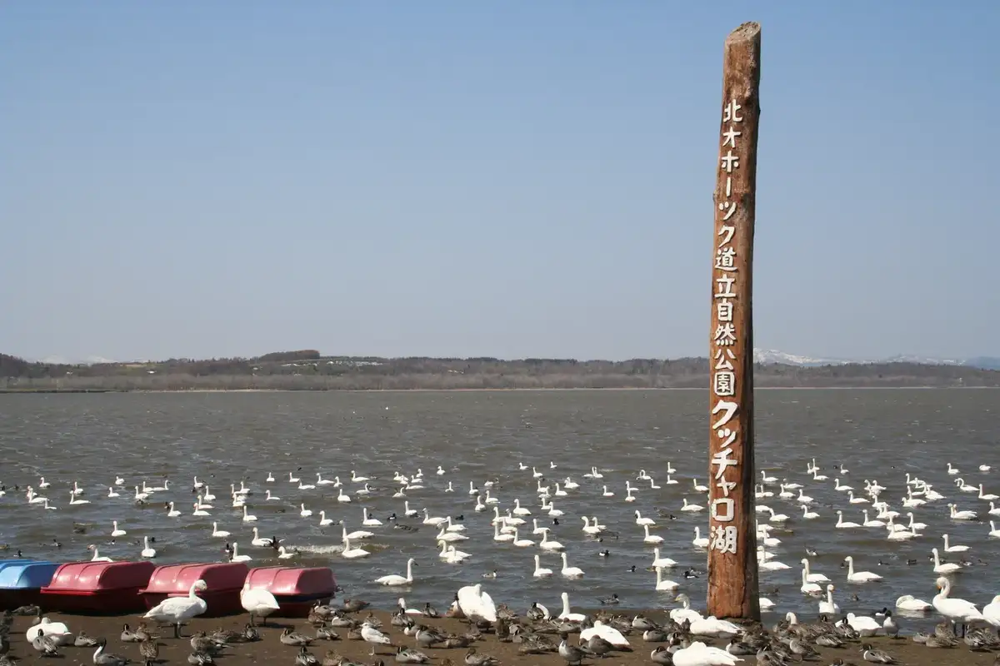
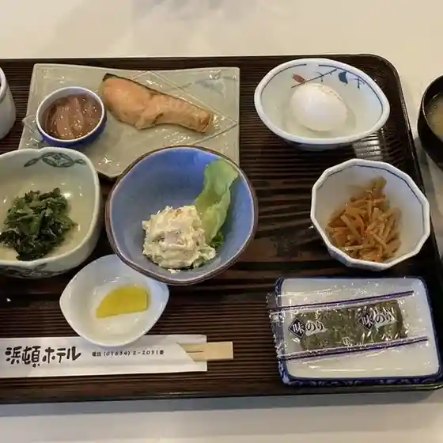
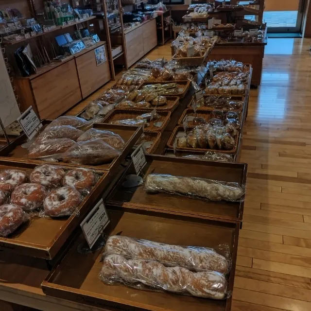
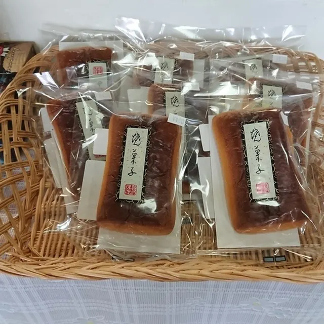
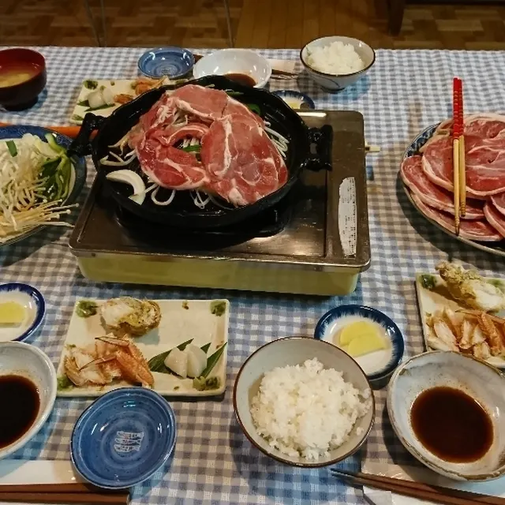
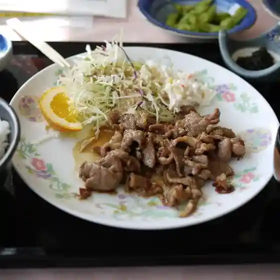
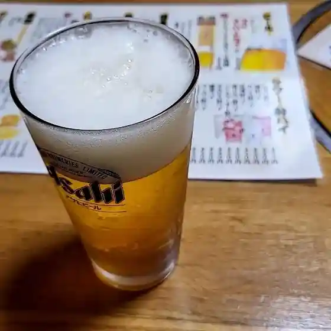
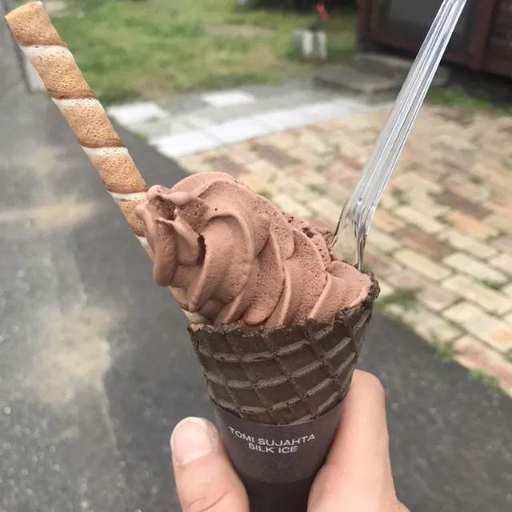

Japan / Hokkaido / Hamatonbetsu
Hamatonbetsu
Hamatonbetsu · Hokkaido
Hamatonbetsu
Highlighted on the Hokkaido map.

Stay
はまとんべつ温泉ウイング
Hamatonbetsu Onsen Wing
Onsen hotel in Hamatonbetsu, Hokkaido.
浜頓ホテル
Hamaton Hotel
Hotel in Hamatonbetsu, Hokkaido.
民宿トシカの宿
Minshuku Toshika no Yado
Guesthouse (minshuku) in Hamatonbetsu, Hokkaido.
熊本屋旅館
Kumamotoya Ryokan
Ryokan inn in Hamatonbetsu, Hokkaido.
ペンション小石
Pension Koishi
Pension in Hamatonbetsu, Hokkaido.
民宿雄飛
Minshuku Yuhi
Guesthouse (minshuku) in Hamatonbetsu, Hokkaido.
ファームインぶんちゃんの里
Farm Inn Bunchan no Sato
Farm inn in Hamatonbetsu, Hokkaido.
Dining
浜頓ホテル

Hama Ton Hoteru
こんがり堂

Kongari Dou
セイコーマート 浜頓別緑ヶ丘店

Seikoomaato Hamatonbetsu Midorigaoka Mise
クッチャロ湖畔 売店 Chaiko

Kutcharo Kohan Baiten Chaiko
トシカの宿

Toshika No Yado
はまとんべつ温泉ウィング

Hamatonbetsu Onsen Uingu
奴

Yatsu
北地直送クッチャロ湖畔売店

Hokuchi Chokusou Kutcharo Kohan Baiten
えび幸寿司
Ebi Yukitoshi Tsukasa
焼肉毛利
Yakiniku Mouri
セイコーマート 浜頓別店
Seikoomaato Hamatonbetsu Mise
熊本屋旅館
Kumamoto Ya Ryokan
柔家
Juu Ie
松屋菓子店
Matsuya Kashi Mise
KK'S GARAGE KITCHEN
Kk'S Garage Kitchen
焼肉ハウス草原
Yakiniku Hausu Sougen
ペンションさざれ
Penshon Sazare
中華料理 香英
Chuukaryouri Kouei
菅原水産
Sugawara Suisan
べこっこ
Bekokko
秀
Shuu
おいしんぼう舎民宿雄飛
Oishinbou Sha Minshuku Yuuhi